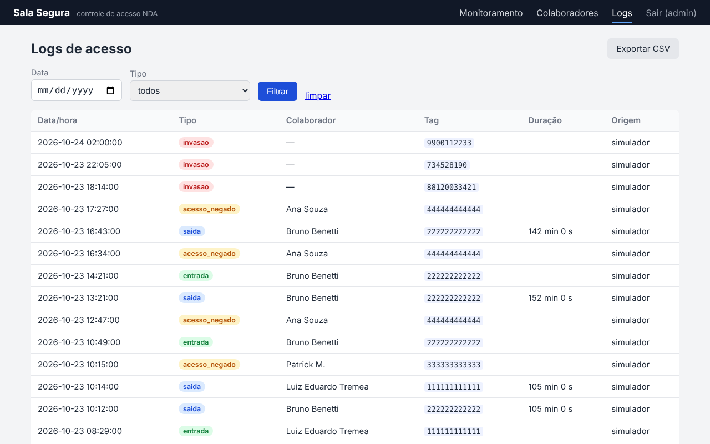

| Integrante | Função | Responsabilidades |
|---|---|---|
| Luiz Eduardo Tremea | Sistema embarcado | Código da Raspberry Pi (leitura RFID, atuadores, sensores opcionais), cache local e fila offline, montagem física e integração com a API. |
| Bruno Benetti | Backend e web | Servidor Flask, banco SQLite, API REST, painel de gestão com login, página de monitoramento em tempo real e exportação CSV. |
| Patrick M. | Dados e documentação | Gerador de dados de teste, notebook Pandas, documentação técnica e apresentação. |
Divisão sugerida a partir da estrutura do repositório. Ajustar conforme a divisão real do grupo.
Um estúdio de jogos precisa restringir e auditar o acesso a uma sala onde ficam materiais de uma publisher sob NDA. O Sala Segura resolve isso com um leitor RFID ligado a uma Raspberry Pi na porta, que valida o crachá, aciona LEDs, buzzer e display, levanta uma cancela (servo) e envia cada evento para um servidor Flask. O servidor concentra os dados em um banco SQLite, oferece um painel para cadastrar colaboradores e permissões, uma página de monitoramento para a empresa de segurança e uma exportação em CSV/API que alimenta a análise em Pandas. A Raspberry continua validando acessos mesmo sem rede, usando um cache local, e sincroniza os registros quando a conexão volta.
Controlar fisicamente quem entra na sala do projeto e registrar todas as tentativas de acesso, autorizadas ou não, de forma que o estúdio consiga comprovar à publisher o cumprimento do NDA e investigar qualquer incidente.
Na versão completa, cada porta protegida tem um módulo com leitor RFID, display, fechadura eletromagnética e sensor de porta aberta. Os módulos se comunicam com um servidor central por rede cabeada ou Wi-Fi corporativa, com TLS e autenticação por certificado. O servidor usa um banco relacional com backup, perfis de usuário (administrador, gestor, segurança), trilha de auditoria de quem alterou permissões, e integra com o sistema de RH para desativar crachás de desligados automaticamente. A empresa de segurança recebe alertas por push e e-mail, e os relatórios de permanência e tentativas são gerados automaticamente por período.
O MVP cobre o fluxo completo em escala de bancada, com uma porta e três módulos de software:
| Módulo | Tecnologia | O que faz |
|---|---|---|
raspberry/ | Python, RPi.GPIO, mfrc522, RPLCD, requests | Lê o crachá, valida pelo cache, aciona LEDs, buzzer, LCD 16x2 e o servo da cancela, envia eventos e mantém fila offline. Tem modo --simular que roda sem hardware. |
servidor/ | Flask, SQLite, Jinja, JS (polling) | API para a Rasp (sync, eventos, heartbeat), login, CRUD de colaboradores, logs com filtro, monitoramento em tempo real e exportação CSV. |
analise/ | Pandas, Matplotlib, Jupyter | Lê a API ou o CSV e responde as seis perguntas do enunciado, com gráficos por dia e por hora. |
Fora do MVP: múltiplas portas, HTTPS, perfis de usuário, integração com RH e notificações externas.
Problema. O material da publisher não pode vazar. Uma porta com chave comum não registra quem entrou, não diferencia funcionários do projeto dos demais e não gera evidência para auditoria. O estúdio também precisa que uma empresa de segurança terceirizada acompanhe a sala sem ter acesso ao cadastro de pessoas.
Solução. O crachá RFID identifica cada pessoa. A Raspberry na porta decide na hora, com base no cadastro sincronizado, se libera ou não, e dá um retorno visual e sonoro diferente para cada caso. Tudo vira evento com data e hora no servidor. O painel de gestão fica com o estúdio; a página de monitoramento mostra à segurança apenas o que ela precisa: quem está dentro, entradas, saídas e alertas. Os logs em CSV permitem auditoria posterior com Pandas.
| Projeto | Tipo | Relação com o Sala Segura |
|---|---|---|
| Control iD iDAccess | Comercial | Controlador de acesso com biometria, cartão MIFARE/125 kHz e senha, mais de 200 mil registros, regras por grupo e horário e software de gestão embarcado acessível pelo navegador. É a referência de "produto final" para o nosso painel. |
| Intelbras SS 3430 MF Bio | Comercial | Controlador de acesso RFID 13,56 MHz com biometria. Listado a R$ 1.689,38 na KaBuM em out/2026, o que dá a ordem de grandeza do custo de uma solução pronta por porta. |
| Expansão e adaptação de fechaduras eletrônicas do DCC (Felipe Mingote, UFMG, 2021) | Acadêmico | Fechaduras de laboratório com leitores RFID, registro de acessos, banco centralizado e gestão em Python/Flask com Bootstrap, onde professores concedem ou revogam permissões. Mesma pilha de software que a nossa. |
| Sistema de controle de acesso via RFID/NFC (Breno Cordeiro Bispo, UFPE, 2019) | Acadêmico | Leitor em ESP32 com PN532, servidor MySQL, broker MQTT e Node-RED, além de app Android que usa o celular como cartão NFC. Mostra a alternativa AMQP/MQTT que o enunciado cita. |
| Item | Loja consultada (out/2026) | Preço |
|---|---|---|
| Raspberry Pi 4 Model B 4 GB | MakerHero ("a partir de") | R$ 491,90 |
| Kit leitor RFID MFRC522 + cartão + chaveiro | Eletrogate | R$ 14,90 |
| Micro servo SG90 (cancela) | Usinainfo | R$ 17,33 |
| Buzzer passivo 5 V | Eletrogate | R$ 1,90 |
| Protoboard 400 pontos | Eletrogate | R$ 8,90 |
| Display LCD 1602A, potenciômetro, LEDs, resistores e jumpers | já disponíveis no kit da disciplina | — |
| Total aproximado do MVP | R$ 534,93 | |
Não estão incluídos cartão microSD, fonte e o computador que roda o servidor, que o grupo já possui. Os preços variam por loja e estoque; a Raspberry Pi 4 4 GB apareceu também a R$ 944,84 na NextPi, fora de estoque.
Por porta, uma solução comercial pronta como o Intelbras SS 3430 MF Bio custa cerca de R$ 1.690, e o Control iD iDTouch (teclado e RFID) R$ 285,90 na KaBuM, sem a fechadura eletromagnética, a fonte e a instalação. Mantendo a nossa arquitetura, o custo por porta cai para a faixa do MVP, mas somam-se: fechadura eletromagnética e fonte dedicada, caixa para o módulo, cabeamento, servidor com backup (ou nuvem) e horas de desenvolvimento para HTTPS, perfis, integração com RH e notificações. A economia por porta compensa a partir de algumas unidades; para uma porta só, o produto comercial é mais barato no total.
cache_colaboradores.json), baixado de GET /api/sync ao ligar e a cada 60 s.invasao; cadastrado sem permissão gera acesso_negado; autorizado gera entrada ou saida, alternando a cada leitura. A saída carrega a duração da visita e o LCD mostra o total do dia. Entradas e saídas autorizadas levantam a cancela por 3 s; acesso negado e invasão mantêm a cancela fechada.POST /api/eventos. Se falhar, entra em fila_offline.json e é reenviado no próximo heartbeat bem-sucedido. O servidor tem chave única (data_hora, tipo, tag) e descarta duplicatas.eventos e a página de monitoramento reflete em até 3 s.A Rasp nunca depende do servidor para decidir: a validação é sempre pelo cache. Sem rede, os eventos ficam em arquivo (gravação atômica, sobrevive a queda de energia) e o estado de quem está dentro fica em estado_sala.json. O heartbeat a cada 10 s detecta a volta da rede e descarrega a fila. O monitoramento mostra "Raspberry offline" e a quantidade de eventos pendentes.
Limitações: alterações de cadastro feitas no painel durante a queda só chegam na próxima sincronização; se a Rasp reiniciar sem rede e sem cache, toda tag é tratada como desconhecida; o relógio da Rasp precisa estar certo para os horários baterem.
| Componente | Pino físico | Observação |
|---|---|---|
| RFID SDA / SCK / MOSI / MISO / RST | 24 / 23 / 19 / 21 / 22 | SPI; alimentação em 3,3 V (pino 1), GND pino 6 |
| LED verde / LED vermelho | 11 / 13 | resistor 220 a 330 Ω |
| Buzzer passivo | 12 | PWM por software, tons diferentes por evento |
| Servo SG90 (cancela) | 15 | sinal no pino 15, alimentação em 5 V; 0° fechada, 90° aberta |
| LCD 1602A (4 bits): RS / E / D4 / D5 / D6 / D7 | 31 / 33 / 35 / 37 / 38 / 40 | VDD e BLA em 5 V, GND, RW e BLK no GND, VO no potenciômetro (contraste) |



| Risco / lacuna | Impacto | Mitigação ou próximo passo |
|---|---|---|
| Crachá clonado ou emprestado | Acesso indevido com registro em nome de outra pessoa | Segundo fator (senha ou biometria) e cartões MIFARE com autenticação, como nos produtos comerciais. |
| Tráfego HTTP sem criptografia e chave de API fixa | Eventos podem ser forjados na rede local | HTTPS com certificado, chave por dispositivo, rede segregada. |
| Saída sem passar o crachá | Tempo de permanência errado e "fantasmas" na sala | Sensor de porta e sensor de presença interno (fora do MVP) para fechar a visita automaticamente; alerta ao gestor. |
| Servidor único em um notebook | Fica sem monitoramento e sem histórico se o notebook desligar | Servidor dedicado ou nuvem, backup diário do banco, PostgreSQL. |
| Dados pessoais (nome, matrícula, horários) | Obrigações da LGPD | Perfis de acesso, trilha de auditoria, política de retenção dos logs. |
| Equipe e equipamento | Uma porta só, componentes de bancada | Fechadura eletromagnética no lugar do servo, botão de chamada da segurança, caixa para o módulo, cabeamento e um desenvolvedor dedicado por 2 a 3 meses para os itens acima. |